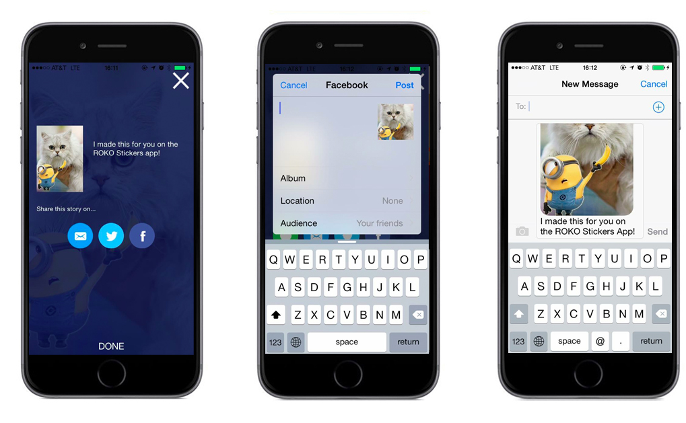
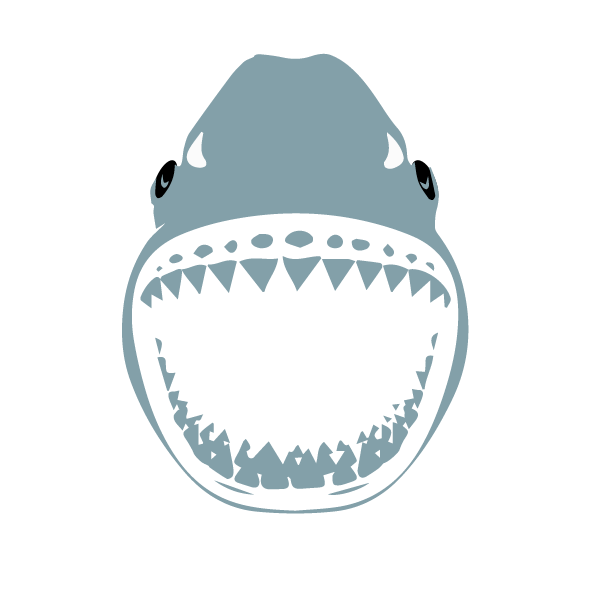
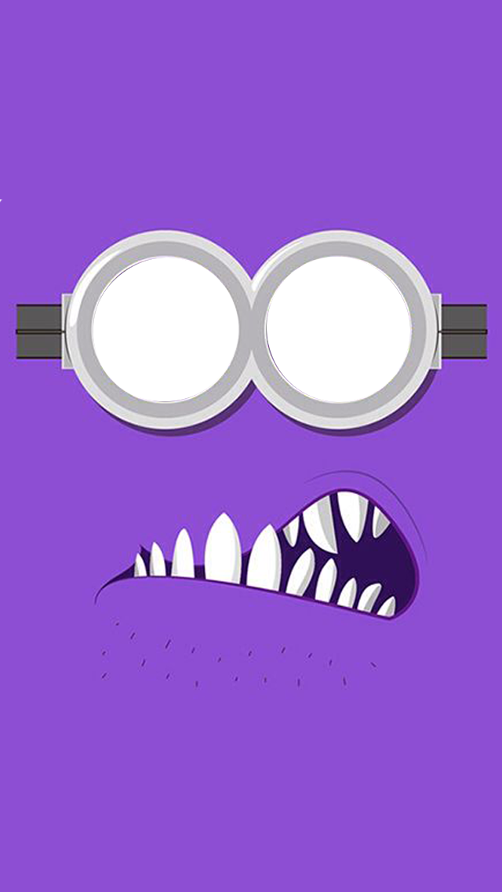
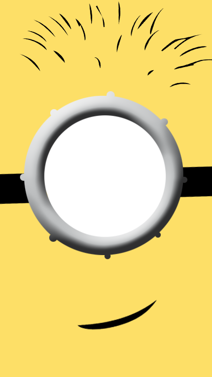

Roko Labs is an application development company, dealing with development of applications for other companies on both PCs and mobile platforms including android and iOS. One of the projects I worked on was Stickers. This was an SDK that allowed you to place images onto photos of yourself. In particular,I worked on Discovery Channel's Shark week app and Despicable Me minion app . I worked on developing original assets for their stickers app.




